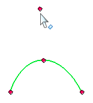
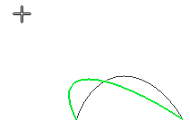
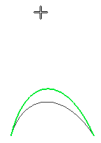
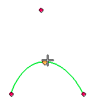
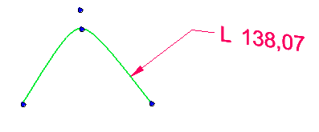
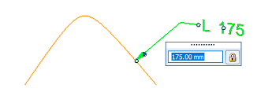

Edit a conic curve
Edit conic shape using control points
After you place a conic curve:
-
You can use the control point

to dynamically edit its height and shape within the allowable Rho value range for that shape type:


-
You can change the shape of a conic, hyperbola, or ellipse curve by changing the value in the Rho edit box on the command bar.
-
You also can create a formula to drive the curve shape by referencing the Rho variable in the Variable Table.
-
You can move a conic curve by dragging it by its vertex point.

Control curve length with a smart dimension
You can control the length of the conic curve by placing a Smart Dimension command on the conic curve.

You can then edit the dimension to change the curve length and shape.
|
Original length |
Edited length |
|---|---|
|
 |
How do I
Draw a curveDisplay the control polygon for a curve
Insert or remove points on a curve
Simplify a curve
Convert analytic geometry to a b-spline curve
Draw a conic curve
Look up more details
Curve commandCurve command bar
Curve Options dialog box
Conic command
Conic command bar
Simplify Curve command
Simplify Curve dialog box
Convert To Curve command